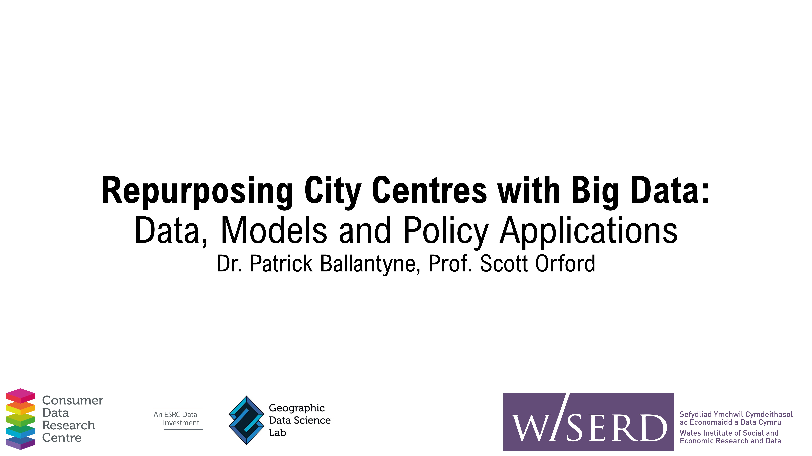
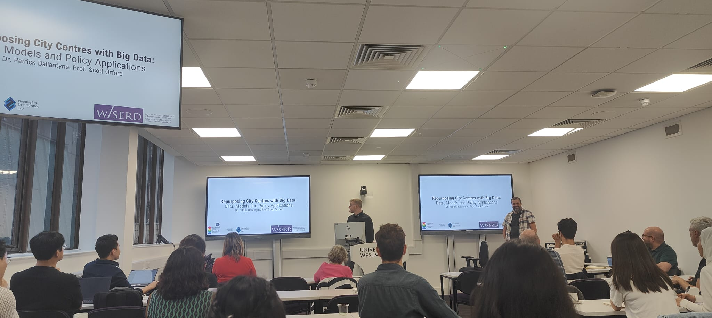
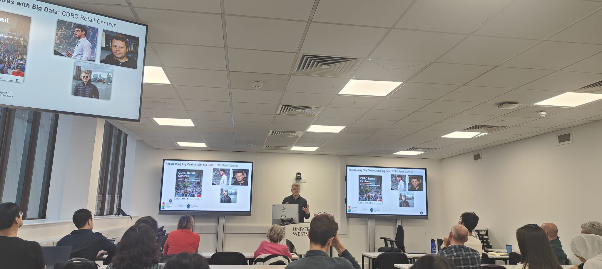
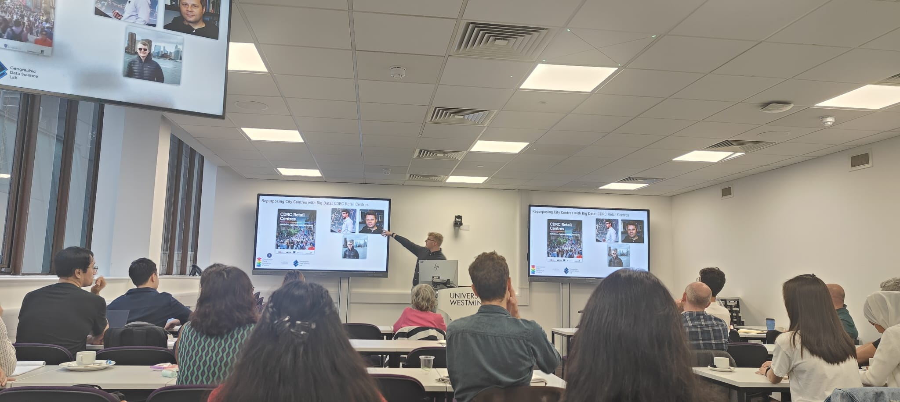

Repurposing City Centres Symposium - July 2023
University of Westminster, London
Repurposing City Centres Symposium
I recently took part in a symposium held at the University of Westminster, entitled “Repurposing City Centres”. The symposium was organised by Sina Shahab and Brian Webb (Cardiff University), and aimed to bring academics and practitioners together from the UK and South Korea to discuss how our city centres are changing, and discuss the future for repurposing city centres.

Repurposing City Centres with Big Data: Data, Models and Policy Applications.
Together with Prof. Scott Orford, I delivered a presentation entitled “Repurposing City Centres with Big Data: Data, Models and Policy Applications”. In the talk we gave an overview of the two research centres that we are affilitated with - Consumer Data Research Centre and WISERD - and provided a ‘shop window’ style talk covering lots of the research that has been done in these two centres around retail, cities, data and policy.

In my half of the talk I focused explicitly on the CDRC model of engagement, around the use of open, safeguarded and secure data products for dissemination of research outputs. I followed this with an overview of all the work done as part of the CDRC retail centres work package, around retail centre boundaries, typologies, indicators, and international comparisons, drawing on our work in the US and plans for similar studies in South Korea.
If you are interested in learning more about our talk, a copy of our slides can be found here.
Photos



More Information
For a full breakdown of the symposium talks you can visit the Eventbrite page set up for the event.